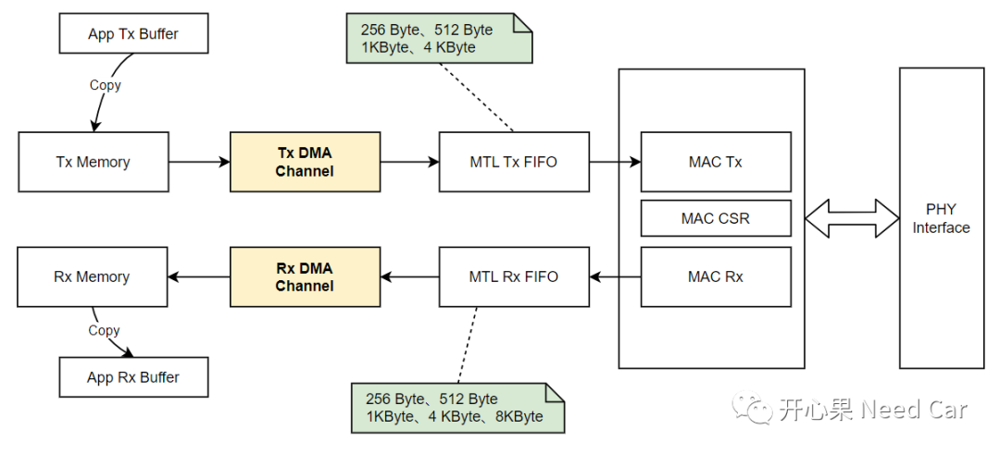
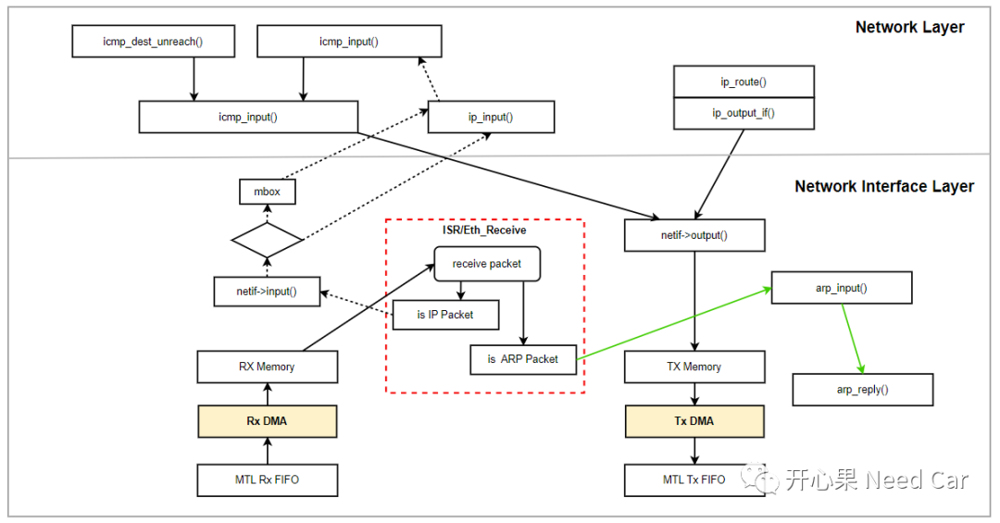
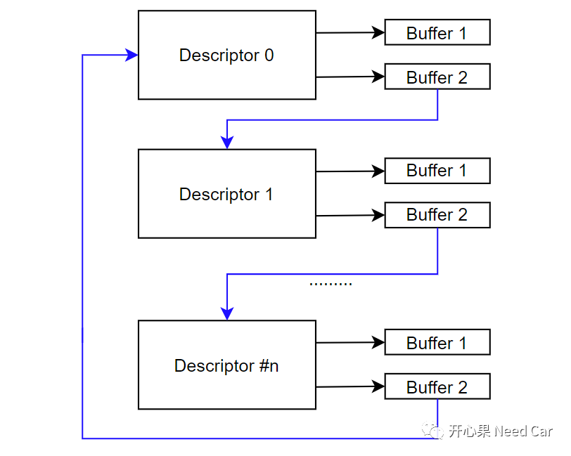
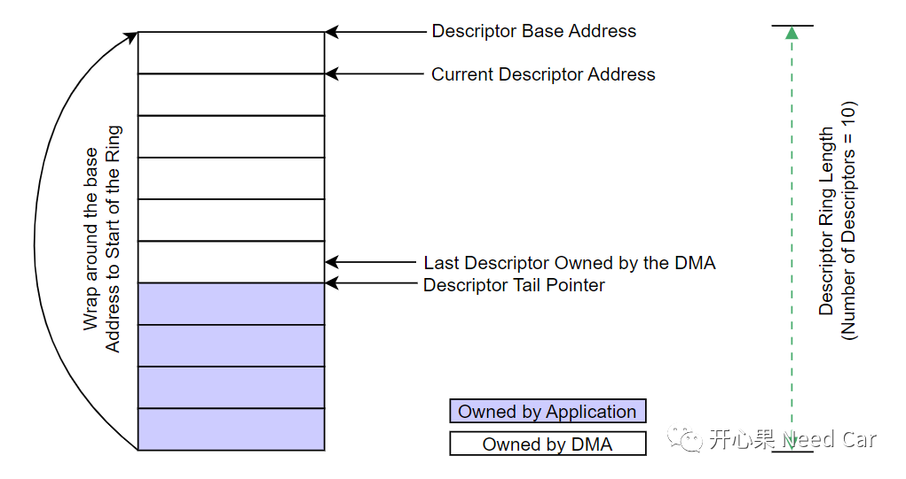
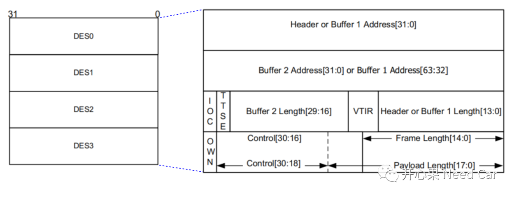
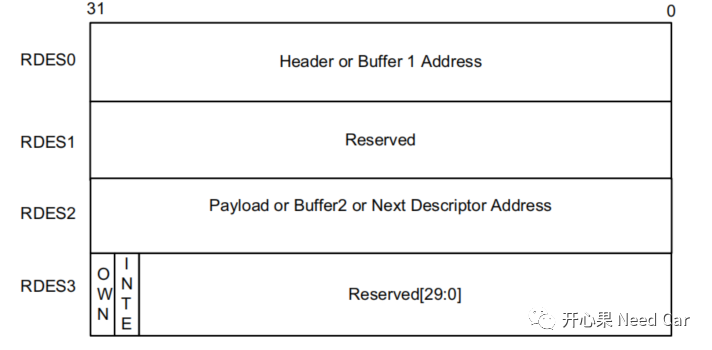

开心果 Need Car · 2023-12-01T08:50:00+08:00 · 微信原文
1、DMA位置

提示：Tx FIFO或者Rx FIFO可由多个队列（Queue）共享，TC3xx最多可以设置4个Tx Queue、4个Rx Queue。每个Queue的大小必须是256 Byte的倍数。
（一）Lwip中的DMA
熟悉Lwip(Light weight IP)的小伙伴，对如下流程应该不陌生。其中，DMA所处的位置如下所示：

2、DMA Descriptors
Normal Descriptor：用于Packet数据和控制信息传输的描述。每个Normal描述符包含两个缓存区（Buffer）和两个地址指针；
Context Descriptor：主要用于控制信息传输的描述。
DWC_ether_qos支持Ring Struct DMA Descriptor，一种实现方式如下所示：


brief Rx Descriptor */typedef struct{IfxGeth_RxDescr0 RDES0;IfxGeth_RxDescr1 RDES1;IfxGeth_RxDescr2 RDES2;IfxGeth_RxDescr3 RDES3;IfxGeth_RxDescr;brief Tx Descriptor */typedef struct{IfxGeth_TxDescr0 TDES0;IfxGeth_TxDescr1 TDES1;IfxGeth_TxDescr2 TDES2;IfxGeth_TxDescr3 TDES3;IfxGeth_TxDescr;
（二）Transmit Descriptor
DWC_ether_qos可以支持Read和Write-back格式的Transmit Descriptor。
Transmit Normal Descriptor (Read Format)包含TDES0，TDES1， TDES2，TDES3，如下所示：

（三）Receive Descriptor
DWC_ether_qos也可以支持Read和Write-back格式接收描述符。

本文不讨论Transmit/Receive Normal Descriptor (Write-back Format)及Transmit/Receive Context Descriptor。
3、Ethernet DMA初始化的软件实现
（1）Software Reset，主要操作DMA Bus Mode Register的SWR位域，以便于完成DMA, MTL和MAC内部寄存器复位，当完成DWC_ether_qos Clock的复位动作以后，此位域自动清零。DMA_MODE寄存器的软复位动作如下所示：
IFX_INLINE void IfxGeth_dma_applySoftwareReset(Ifx_GETH *gethSFR){gethSFR->DMA_MODE.B.SWR = 1;}
（2）在进行后续的DMA, MTL和MAC配置之前，需要等待复位完成，即，直到gethSFR->DMA_MODE.B.SWR == 0。
/* Initialize descriptors in ring mode */for (i = 0; i < IFXGETH_MAX_TX_DESCRIPTORS; i++){descr->TDES0.U = (uint32)(config->txBuffer1Size * i) + buffer1StartAddress;descr->TDES1.U = 0; /* buffer2 not used */descr->TDES2.R.B1L = config->txBuffer1Size;descr->TDES2.R.VTIR = 0; /* do not use VLAN tag */descr->TDES2.R.B2L = 0; /* buffer2 not used */descr->TDES2.R.TTSE_TMWD = 0; /* timestamp not used */descr->TDES2.R.IOC = 0; /* interrupt disabled *//* TDES3 will be configured while trasmitting each packet */descr = &descr[1];}
接收描述符链表创建示意如下：
/* Initialize descriptors in ring mode */for (i = 0; i < IFXGETH_MAX_RX_DESCRIPTORS; i++){descr->RDES0.U = (uint32)(config->rxBuffer1Size * i) + buffer1StartAddress;descr->RDES2.U = 0; /* buffer2 not used */descr->RDES3.R.BUF1V = 1; /* buffer 1 valid */descr->RDES3.R.BUF2V = 0; /* buffer 2 not valid */descr->RDES3.R.IOC = 1; /* interrupt enabled */descr->RDES3.R.OWN = 1; /* owned by DMA */descr = &descr[1];}
往期精彩回顾